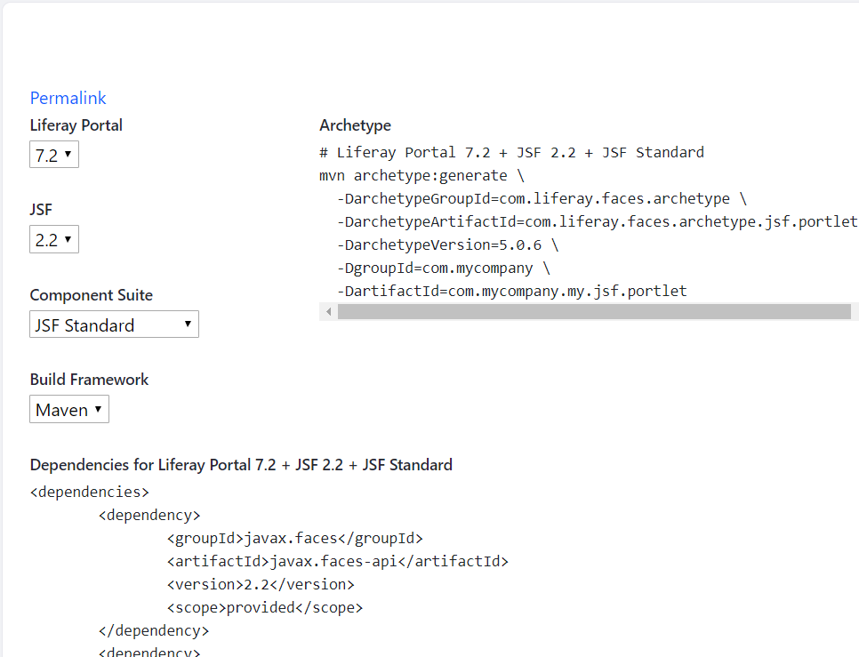

Upgrading Portlets
Step 3 of 6
Liferay JSF portlets are easy to upgrade and require few changes. They interface with the Liferay Faces project, which encapsulates Liferay DXP’s Java API and JavaScript code. Because of this, upgrading JSF portlets to the new DXP version requires only updating dependencies.
There are two ways to find a JSF portlet’s dependencies for the new DXP version:
In this article, you’ll upgrade a Liferay DXP JSF portlet’s (JSF 2.2) dependencies to the new DXP version.
Open your Liferay JSF portlet’s build file (e.g., pom.xml, build.gradle)
to where the dependencies are configured.
Navigate to the http://liferayfaces.org/ site and generate a dependency list by choosing the environment to which you want to upgrade your portlet.

Figure 1: The Liferay Faces site gives you options to generate dependencies for many environments.
Compare the generated dependencies with your portlet’s dependencies and make any necessary updates. For example, in the sample dependencies listed below, the Mojarra dependency and two Liferay Faces dependencies require updating:
<dependency>
<groupId>org.glassfish</groupId>
<artifactId>javax.faces</artifactId>
<version>2.2.13</version>
<scope>runtime</scope>
</dependency>
<dependency>
<groupId>com.liferay.faces</groupId>
<artifactId>com.liferay.faces.bridge.ext</artifactId>
<version>3.0.0</version>
</dependency>
<dependency>
<groupId>com.liferay.faces</groupId>
<artifactId>com.liferay.faces.bridge.impl</artifactId>
<version>4.0.0</version>
</dependency>
Using the http://liferayfaces.org/ dependency list as a guide, these dependencies would be updated to
<dependency>
<groupId>org.glassfish</groupId>
<artifactId>javax.faces</artifactId>
<version>2.2.19</version>
<scope>runtime</scope>
</dependency>
<dependency>
<groupId>com.liferay.faces</groupId>
<artifactId>com.liferay.faces.bridge.ext</artifactId>
<version>5.0.4</version>
</dependency>
<dependency>
<groupId>com.liferay.faces</groupId>
<artifactId>com.liferay.faces.bridge.impl</artifactId>
<version>4.1.3</version>
</dependency>
Once your Liferay JSF portlet’s dependencies are updated, it’s deployable to the new DXP version! Follow the Deploying a Project article for deployment help.
When the portlet WAR is deployed, Liferay DXP’s Plugin Compatibility Layer converts the WAR to a Web Application Bundle (WAB) and installs the portlet as a WAB to Liferay DXP’s OSGi runtime. The server prints messages that indicate the following portlet status:
Deploying a Liferay JSF portlet produces messages like these:
13:41:43,690 INFO ... [com.liferay.portal.kernel.deploy.auto.AutoDeployScanner][AutoDeployDir:252] Processing com.liferay.faces.demo.jsf.applicant.portlet-1.0.war
...
13:42:03,522 INFO [fileinstall-C:/liferay-ce-portal-7.2-ga1/osgi/war][BundleStartStopLogger:35] STARTED com.liferay.faces.demo.jsf.applicant.portlet-1.0_4.1.0 [503]
...
13:42:05,169 INFO [fileinstall-C:/liferay-ce-portal-7.2-ga1/osgi/war][PortletHotDeployListener:293] 1 portlet for com.liferay.faces.demo.jsf.applicant.portlet-1.0 is available for use
After the portlet deployment is complete, it’s available on Liferay DXP.
You’ve learned how to upgrade and deploy a Liferay JSF portlet. You resolved dependencies and deployed the portlet as you always have. It’s just that easy!